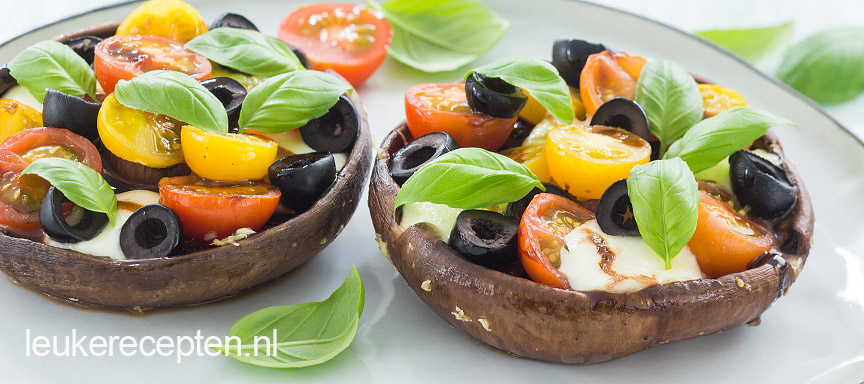

Gevulde Portobello met Mozzarella


Hierbij 3 heerlijke recepten voor voor,hoofd en na gerechten.Om te beginnen met een heerlijk voorgerecht namelijk:Gevulde Portobello
met heerlijke Mozzarella. Heerlijke voorsmaakje voor bij het hoofdgerecht. Als hoofdgerecht hebben we de: Wraps met Roti kip. een heerlijke
Hoofdgerecht op zijn Surinaams bereid. Als na gerecht heerlijke Snelle Tiramisu. Voel je de lekkere Gesuikerde lange vingers al rammelen in je maag?
dan word het nog mooier met heerlijke aardbeien!
Voor de Ingredienten en de bereiding kun je op de plaatjes klikken!
Wil je toch iets anders proberen? Of lus je 1 van deze dingen niet? kijk dan gerust op Leukerecepten.nl!